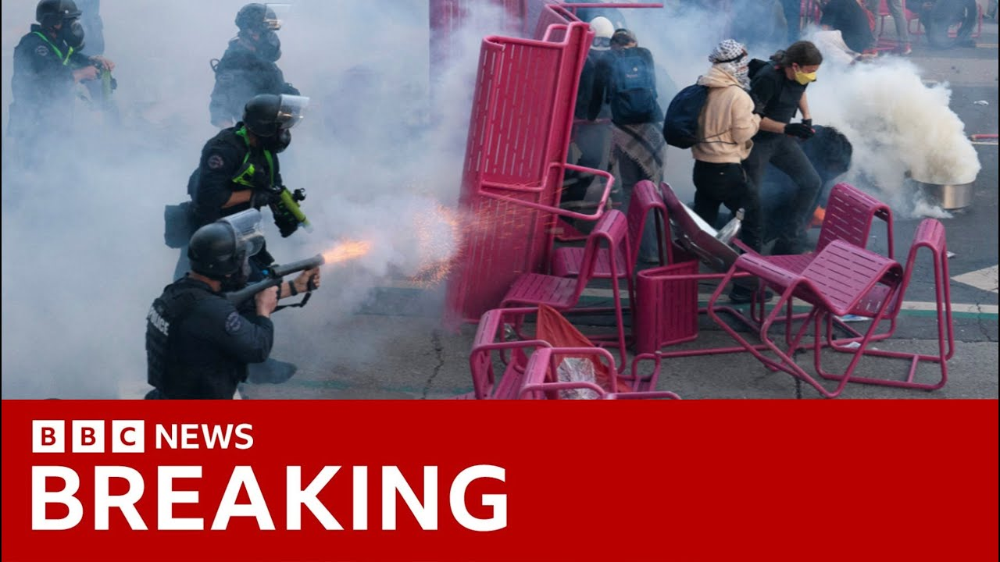

【突发：美国军方证实700名海军陆战队员部署至洛杉矶，抗议活动升级 | BBC新闻】
Summary: California Governor Gavin Newsom sues President Trump over National Guard deployment, accusing him of manufacturing a crisis amid protests sparked by immigration raids.
摘要： 加州州长加文·纽瑟姆起诉特朗普总统派遣国民警卫队，指责其在移民突袭引发的抗议中制造危机。

⏱️ Estimated Reading Time: 6 min
📚 六级生词 📚 雅思生词 📚 托福生词 📚 GRE生词 📚 视频里的生词
The governor of California, Gavin Newsome, who's a Democrat, has sued President Trump over his deployment of the National Guard in Los Angeles against his wishes.
加州州长、民主党人加文·纽瑟姆起诉特朗普总统违背其意愿在洛杉矶部署国民警卫队。
He's accused Mr. Trump of seeking to manufacture a crisis.
他指责特朗普试图制造危机。
Rioting was sparked after the Trump administration sent immigration agents to detain unauthorized migrants in the city.
骚乱是在特朗普政府派遣移民特工拘留该市无证移民后引发的。
President Trump says the move was necessary for law and order and that without it, LA would have been completely obliterated.
特朗普总统称此举对法律和秩序是必要的，否则洛杉矶将彻底毁灭。
Our correspondent John Sudworth is there.
我们的记者约翰·苏德沃斯在现场。
Well, things are a little calmer, at least so far today.
目前情况稍显平静，至少今天如此。
You can see the protesters here.
你可以看到这里的抗议者。
I'd say no more than a hundred or so gathered outside this detention center where some of the immigrants detained in those workplace raids are being held.
我认为不超过一百人聚集在这座拘留中心外，这里关押着工作场所突袭中拘留的部分移民。
And on this side, you can see the LAPD.
这边你可以看到洛杉矶警察局。
Their numbers have been boosted today by reinforcements brought in from outside Los Angeles County.
今天他们的数量因从洛杉矶县外调来的增援而增加。
But the most contentious part of this picture is a little bit further over there.
但最具争议的部分在稍远处。
You can see the members of the National Guard stood by.
你可以看到国民警卫队成员待命。
And although things may be quieter here, they of course are at the center of an escalating political storm between the president of this country and the governor of this state.
尽管这里可能较为平静，但他们无疑是总统和州长之间不断升级的政治风暴的中心。
There's now a huge police presence in this city with reinforcements brought in as the authorities try desperately to contain the violence.
现在这座城市有大量警力，当局拼命试图控制暴力。
Overnight, once again, protesters threw fireworks and the police responded with force, making a number of arrests.
昨晚，抗议者再次投掷烟花，警方武力回应，逮捕多人。
But an already tense situation triggered by the workplace raids and arrests of undocumented immigrants, now has a complex political dimension.
但由工作场所突袭和无证移民逮捕引发的紧张局势，现在又增添了复杂的政治因素。
The National Guard, a reservist military force, is often used to respond to natural disasters and is normally called in by state governors.
国民警卫队作为预备役军事力量，通常用于应对自然灾害，并由州长调用。
Not this time.
这次不同。
For the first time in 60 years, a US president has ordered them in.
60年来首次，美国总统下令派遣他们。
While members of his administration warned that anyone who gets in the way, even senior politicians, face arrest.
而他的政府成员警告，任何阻碍者，甚至高级政客，都将面临逮捕。
Come after me.
来抓我。
Arrest me.
逮捕我。
Let's just get it over with.
干脆点。
Tough guy.
硬汉。
It's a threat that's been met with a furious response from California's governor speaking to MSNBC.
这一威胁引发加州州长在MSNBC上的愤怒回应。
The hell are they doing?
他们到底在干什么？
These guys need to grow up.
这些人需要成熟点。
They need to stop.
他们需要停止。
And we need to push back.
我们必须反击。
And I'm sorry to be so clear, but uh that kind of bloiating is exhausting.
抱歉说得这么直白，但这种虚张声势令人疲惫。
So Tom, arrest me.
所以汤姆，逮捕我。
Then this from President Trump asked if the governor should be arrested, I would.
随后特朗普总统被问及是否应逮捕州长时回答：“我会。”
He replied, he's an incompetent governor.
他回应：“他是个无能的州长。”
Look at the job he's doing in California.
看看他在加州的工作。
He's destroying one of our great states.
他正在摧毁我们伟大的州之一。
And if I didn't get involved, if we didn't bring the guard in, and we would bring more in if we needed it because we have to make sure there's going to be law and order.
如果我不介入，如果我们不派警卫队，必要时我们会派更多，因为我们必须确保法律和秩序。
Uh you had uh a disaster happening.
你们本会遭遇灾难。
Well, the streets of downtown LA are littered with the debris of last night's trouble.
洛杉矶市中心的街道散落着昨晚骚乱的碎片。
If you just anywhere you look, you pick them up, you've got the uh hundreds and hundreds of these batton rounds, rubber bullets, the canisters from which they've been fired, and also rocks which we've seen protesters sometimes throwing at the police.
随便一看，就能捡到数百枚警棍弹、橡胶子弹、发射罐，以及抗议者有时投向警察的石头。
It's quiet at the moment, but these officers have been drafted in from neighboring police forces as this city braces for more trouble today.
此刻很安静，但这些警官是从邻近警局调来的，因为城市正为今天可能的更多骚乱做准备。
One sign of just how dangerous things have become.
情况有多危险的一个迹象。
This reporter from the Australian Channel 9 News was hit by a rubber bullet live on air.
澳大利亚第九频道记者直播时被橡胶子弹击中。
I'm good.
我没事。
I'm good.
我没事。
This city now finds itself at the center of an escalating political fight between a president and a governor.
这座城市现在处于总统和州长之间不断升级的政治斗争中心。
In response to Mr. Trump's comments about his arrest.
针对特朗普关于逮捕他的言论。
Gavin Newsome said this was a day he hoped he'd never see in America.
加文·纽瑟姆称这是他曾希望在美国永远不会看到的一天。
In many ways, some of the biggest constitutional issues of our day are now being played out on the streets of Los Angeles.
从许多方面看，当今一些最大的宪法问题正在洛杉矶街头展现。
Questions over the limits of presidential power against the extent of state rights.
关于总统权力界限与州权范围的疑问。
The authorities here know that those scenes of violence are playing into the president's narrative.
当地当局知道暴力场景正符合总统的叙事。
That's why they believe he's deployed the National Guard for those public imaging effects.
因此他们认为他部署国民警卫队是为了公众形象效应。
And it's also why we are hearing leaders in this city time and time again appealing for the protesters to show restraint and protest peacefully.
这也为何我们一再听到该市领导人呼吁抗议者保持克制、和平抗议。
Rita, thank you very much.
丽塔，非常感谢。
John Sudworth reporting
约翰·苏德沃斯报道